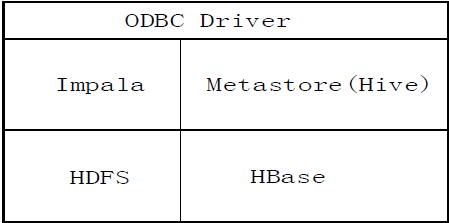
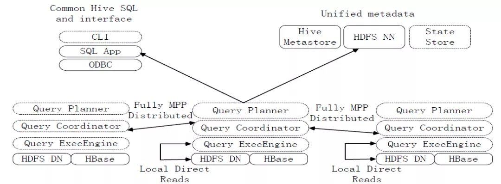
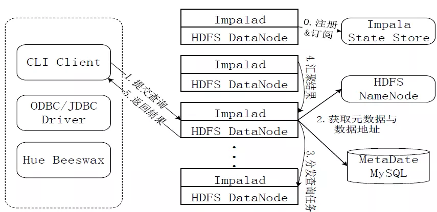
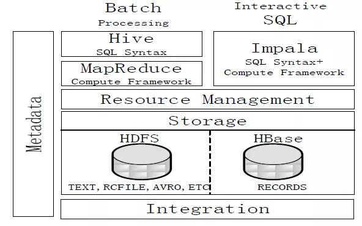

大数据006impala与hive对比详解
Impala简介
Impala是由Cloudera公司开发的新型查询系统，它提供SQL语义，能查询存储在Hadoop的HDFS和HBase上的PB级大数据，在性能上比Hive高出3~30倍。
Impala的运行需要依赖于Hive的元数据。Impala是参照 Dremel系统进行设计的。
Impala采用了与商用并行关系数据库类似的分布式查询引擎，可以直接与HDFS和HBase进行交互查询。
Impala和Hive采用相同的SQL语法、ODBC驱动程序和用户接口。
 图：Impala与其他组件的关系
Impala系统架构
 图：Impala系统架构图
Impala和Hive、HDFS、HBase等工具是统一部署在一个Hadoop平台上的。Impala主要由Impalad，State Store和CLI三部分组成。
（1）Impalad
- 负责协调客户端提交的查询的执行
- 包含Query Planner、Query Coordinator和Query Exec Engine三个模块。
- 与HDFS的数据节点（HDFS DN）运行在同一节点上。
- 给其他Impalad分配任务以及收集其他Impalad的执行结果进行汇总。
- Impalad也会执行其他Impalad给其分配的任务，主要就是对本地HDFS和HBase里的部分数据进行操作。
（2）State Store
- 会创建一个statestored进程。
- 负责收集分布在集群中各个Impalad进程的资源信息，用于查询调度。
（3）CLI
- 给用户提供查询使用的命令行工具。
- 还提供了Hue、JDBC及ODBC的使用接口。
说明：Impala中的元数据直接存储在Hive中。
Impala采用与Hive相同的元数据、SQL语法、ODBC驱动程序和用户接口，
从而使得在一个Hadoop平台上，可以统一部署Hive和Impala等分析工具，同时支持批处理和实时查询。
Impala查询执行过程
 图：Impala查询执行过程图
Impala执行查询的具体过程：
- 第1步，当用户提交查询前，Impala先创建一个负责协调客户端提交的查询的Impalad进程，该进程会向Impala State Store提交注册订阅信息，State Store会创建一个statestored进程，statestored进程通过创建多个线程来处理Impalad的注册订阅信息。
- 第2步，用户通过CLI客户端提交一个查询到impalad进程，Impalad的Query Planner对SQL语句进行解析，生成解析树；然后，Planner把这个查询的解析树变成若干PlanFragment，发送到Query Coordinator.
- 第3步，Coordinator通过从MySQL元数据库中获取元数据，从HDFS的名称节点中获取数据地址，以得到存储这个查询相关数据的所有数据节点。
- 第4步，Coordinator初始化相应impalad上的任务执行，即把查询任务分配给所有存储这个查询相关数据的数据节点。
- 第5步，Query Executor通过流式交换中间输出，并由Query Coordinator汇聚来自各个impalad的结果。
- 第6步，Coordinator把汇总后的结果返回给CLI客户端。
Impala与Hive的比较
 图：Impala与Hive的对比
Hive与Impala的不同点总结如下：
- Hive适合于长时间的批处理查询分析，而Impala适合于实时交互式SQL查询。
- Hive依赖于MapReduce计算框架，Impala把执行计划表现为一棵完整的执行计划树，直接分发执行计划到各个Impalad执行查询。
- Hive在执行过程中，如果内存放不下所有数据，则会使用外存，以保证查询能顺序执行完成，而Impala在遇到内存放不下数据时，不会利用外存，所以Impala目前处理查询时会受到一定的限制。
Hive与Impala的相同点总结如下：
- Hive与Impala使用相同的存储数据池，都支持把数据存储于HDFS和HBase中。
- Hive与Impala使用相同的元数据。
- Hive与Impala中对SQL的解释处理比较相似，都是通过词法分析生成执行计划。
总结：
- Impala的目的不在于替换现有的MapReduce工具。
- 把Hive与Impala配合使用效果最佳。
- 可以先使用Hive进行数据转换处理，之后再使用Impala在Hive处理后的结果数据集上进行快速的数据分析。
impala常见问题
- 读取文件过多，内存占用比较多
- 元数据数据文件同步延迟
- 分区同步延迟
- 内存占用较多